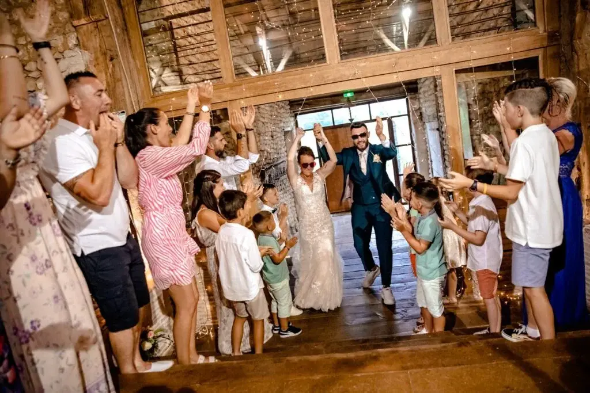
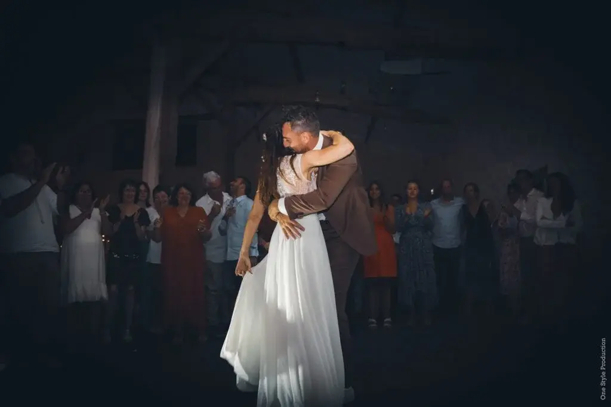
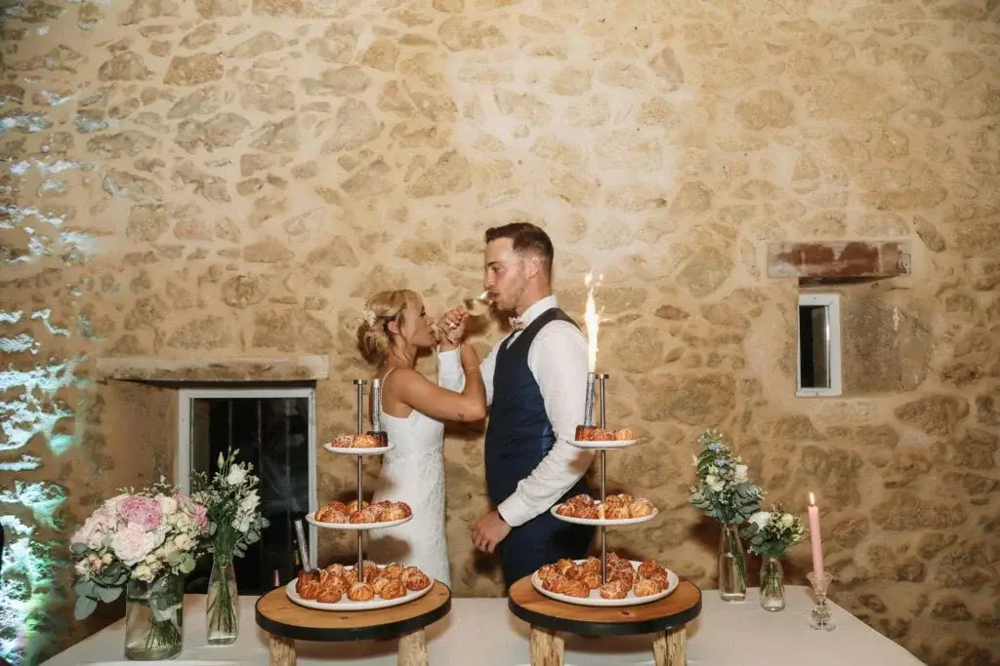

For a successful wedding, you need: a happy couple, delicious catering, a beautifully decorated reception room, an abundance of flowers, guests in top form and, of course, a festive atmosphere! And when it comes to atmosphere, nothing beats music.
Why choosing the right music matters
The couple's entrance into the banquet room remains one of the most anticipated and memorable moments of the wedding. To create an unforgettable atmosphere, it is vital to choose the music for this unique moment carefully. While the ceremony is full of emotion, the couple's entrance should be festive, since this is the moment that sets the tone for the rest of the evening. So it is essential to pick a track with punch that will energise your guests and get them in the party mood.
Here is my selection of 27 must-have songs for your wedding entrance!

27 must-have hits for your wedding entrance
Timeless
Pop
1. "Can't Take My Eyes Off You" - Gloria Gaynor
A classic, romantic song that evokes the loving gaze between the couple.
8. "Don't Worry" - Madcon
An upbeat track with reggae influences for a laid-back entrance.
2. "You're the One That I Want" - Grease Soundtrack
A playful, energetic option for an entrance full of good humour.
9. "Can't Stop the Feeling!" - Justin Timberlake
A vibrant pop song that puts everyone in a good mood.
3. "You're The First, The Last, My Everything" - Barry White
A soul ballad for an entrance full of elegance.
10. "Uptown Funk" - Mark Ronson ft. Bruno Mars
A modern, catchy hit for a dynamic entrance.
4. "Gimme! Gimme! Gimme!" - ABBA
A joyful, festive choice for a lively start to the evening.
11. "Happy" - Pharrell Williams
A joyful song that adds a positive note to the event.
5. "This Old Heart Of Mine" - The Isley Brothers
An upbeat song with a vintage, dynamic touch.
12. "I Gotta Feeling" - The Black Eyed Peas
A party anthem that promises a memorable evening.
6. "I Wanna Dance With Somebody" - Whitney Houston
A pop classic that instantly sets a festive mood.
13. "Shut Up and Dance" - WALK THE MOON
An energetic, danceable option for an entrance full of life.
7. "Think" - Aretha Franklin
Aretha Franklin's powerful voice for an entrance full of character.
14. "Can't Hold Us" - Macklemore
A dynamic song that sets the tone for an entrance full of energy.
R&B/Soul
Made in France
15. "Love on Top" - Beyoncé
An upbeat love song that creates a joyful atmosphere.
21. "Baby I'm Yours" - Breakbot
A retro, elegant option for an entrance full of charm.
16. "We Found Love" - Rihanna
An energetic, romantic track for an unforgettable moment.
22. "A Kele Nta" - MHD
A modern, catchy choice for a French touch in the playlist.
17. "Crazy in Love" - Beyoncé
A Beyoncé classic for an entrance full of passion.
23. "This Girl" - Kungs
A catchy remake that brings an electro touch to the event.
18. "Signed, Sealed, Delivered (I'm Yours)" - Stevie Wonder
A song full of positivity for an entrance full of enthusiasm.
24. "Sapés comme jamais" - Maître Gims ft. Niska
A dynamic song with an urban vibe for an entrance full of style.
19. "Isn't She Lovely" - Stevie Wonder
A soft, romantic ballad for a tender moment.
25. "One More Time" - Daft Punk
An electro classic that adds a modern note to the playlist.
20. "I'm Coming Out" - Diana Ross
An iconic song for an entrance full of confidence and style.
26. "Happy" - C2C
A perfect track for a festive atmosphere and entrance.
27. "When Love Takes Over" - David Guetta
A pop-electro collaboration for an entrance full of energy.

Which songs should you choose for the other key moments?
Beyond the couple's entrance into the reception, a wedding day is punctuated by key moments where the choice of music plays a decisive role and offers a unique opportunity to create memories.
During the ceremony, where love takes centre stage, the choice of songs matters. Gentle melodies such as "A Thousand Years" by Christina Perri or "Unchained Melody" by the Righteous Brothers can turn these moments into unforgettable memories. Likewise, the exchange of vows and rings during a symbolic or religious ceremony is a key moment of your day. The music has its impact, but it is the emotion you share that will make the ceremony unique.
The first dance, often seen as the key moment of the day, calls for a thoughtful choice. It is also a chance for the two of you to be together under your guests' gaze. The song you choose should echo your story and your journey, marking the start of this new adventure as a married couple. But the first dance doesn't have to be formal. Swapping the waltz for salsa, performing a choreography with your witnesses or dancing to a medley of several songs are all alternatives to the classic first dance.
After all these ceremonies, it's time for the dance floor! A wedding is a chance to party with your loved ones, and moments such as the bouquet toss and the cutting of the cake call for upbeat songs ready to get everyone into a festive mood. Tracks like "Celebration" by Kool & The Gang or "Sugar" by Maroon 5 can liven up the atmosphere and bring your guests onto the dance floor to celebrate your happiness.
In short, every key moment of the day offers a unique opportunity to create memories. Choosing specific songs for each moment, not only for their sound but also for their personal meaning, helps create a complete, emotionally rich musical experience throughout your wedding.

My role?
As a wedding planner based in the Bordeaux region, my mission is to accompany you through this unforgettable day by ensuring flawless coordination on the big day. My role is to understand what atmosphere you want for the ceremony and the reception, steering my advice towards musical choices that reflect your style.
The first dance and the cutting of the cake are key moments where timing matters. My responsibility is to oversee the suppliers to guarantee your wedding runs flawlessly.